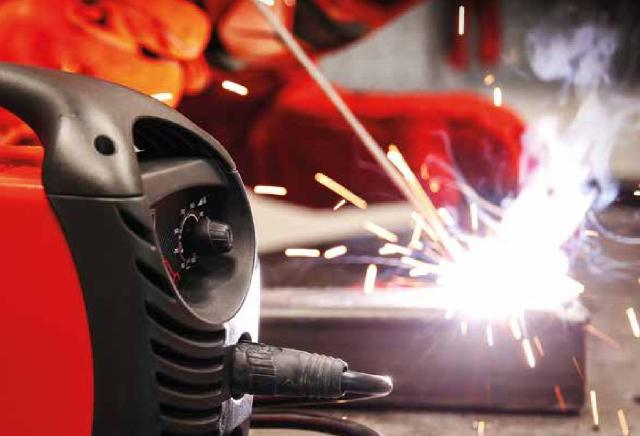
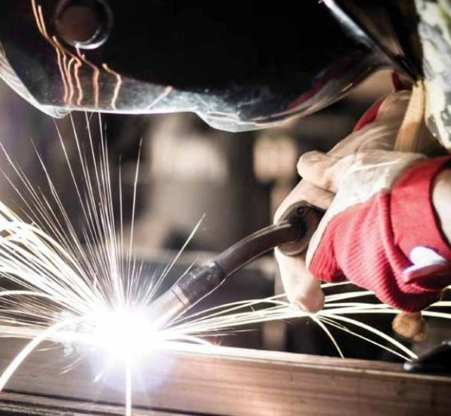
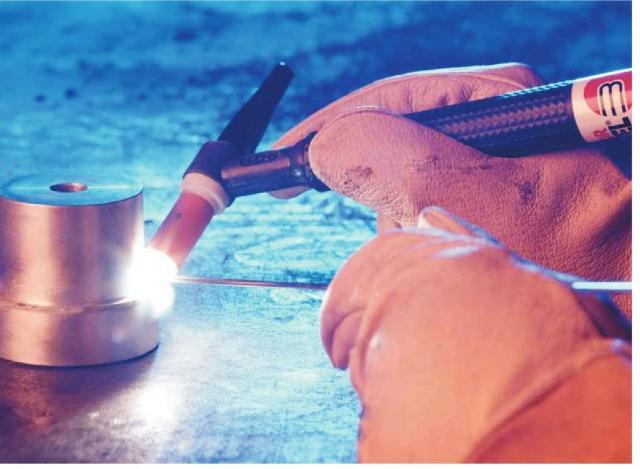

Procesos de soldadura
Cómo funciona cada proceso, el equipo, la técnica y los defectos.

Electrodo revestido
Fundamentos, el equipo y los electrodos, la técnica y los defectos del cordón.

MIG-MAG
El proceso, el equipo, cómo soldar paso a paso y los defectos más habituales.

TIG
Fundamentos, el equipo, la técnica de soldeo y los defectos más habituales.
Corte
Cortar chapa, preparar biseles y sacar soldaduras malas.
Montaje y tubería
Del plano a la pieza montada: en el taller y en la obra.
Para docentes
Pruebas escritas tipo test sacadas de los apuntes, vinculadas a los RA y CE de cada módulo.
Cada tema se abre en un solo archivo, con todas sus imágenes dentro: si lo guardas en el móvil, funciona sin conexión.